Python Objects
Module 4 - Web Applications
Lecture 4.1
ASM 532, Introduction to Ag Informatics
Ankita Raturi, ankita@purdue.edu
Lecture Outline
Object-oriented programming in Python.
- Function design
- Objects in Python
Goal: Decompose systems, instantiate classes.
Programming Paradigms
| Procedural | Functional | Object-oriented |
|---|---|---|
| "[P]rograms are lists of instructions that tell the computer what to do with the program's input." | "Functional programming decomposes a problem into a set of functions. Ideally, functions only take inputs and produce outputs, and don't have any internal state that affects the output produced for a given input." | "Object-oriented programs manipulate collections of objects. Objects have internal state and support methods that query or modify this internal state in some way." |
| Sequential instructions | Functions with inputs and outputs | Objects as data-method bundles |
A. M. Kuchling, Functional Programming HOWTO, Python documentation.
Code color key
| Color | Marks | For example |
|---|---|---|
| red | Python keywords | def, class, return |
| green | functions, methods and classes: things you call | print(), __init__(), Animal |
| blue | arguments: the values you pass in | name in greet(name) |
| purple | attributes: the data an object holds and commands you type in the terminal |
self.name, pip install |
| pink | files, folders and local URLs | views.py, http://127.0.0.1:8000/ |
Procedural Programming
Previously...
PROS
- Linear batch-processing
- Straightforward logic flow
CONS
- Can't reuse code
- Can't support dynamic logic flow
Quick reference on Python Functions
Whatabout my operations?!
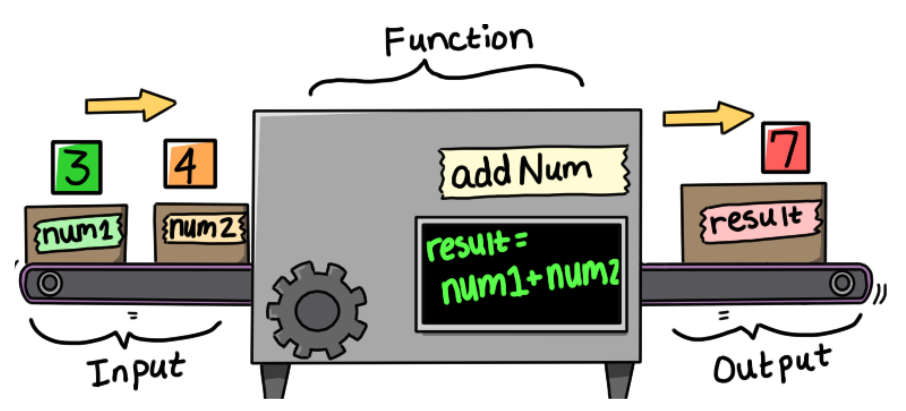
Function machine: Autumn Denny, Ag Informatics Lab, Purdue University, 2025.
Functional Programming
- Logical groups of actions can
defined as a function() - Functions can have input
arguments, e.g. name. - You've imported functions from libraries, e.g., pandas.unique()
Quick reference on Python Functions
Functional Programming
Function with variable number of arguments (*args)
-
*argsis variable length tuple of arguments. -
You can also send in keyword arguments (
kwargs) and a variable number of keyword arguments (**kwargs) - Use of a formatted string
Quick reference on Python Functions
Functional Programming
Function can have outputs, aka a return value
PROS
- Can reuse code!
CONS
- Still a linear program flow
Quick reference on Python Functions
Function Design, in short
- Write function header
- Write a little description in the comments
- Write "type contract", i.e., what is each argument going to be
- Write examples expected behavior.
- Write your function itself!
- Test it.
Designing complex systems

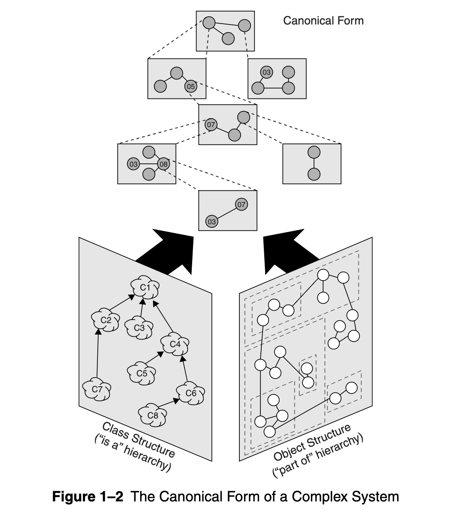
- Hierarchic structure, composed of subsystems
- Primitive components are design choices
- Separation of concerns let us group/isolate parts
- Common patterns to reuse small components
- Stable intermediate forms as we iterate over code
img src: Booch et al., 2007, Object Oriented Analysis & Design.
Object-Oriented Programming
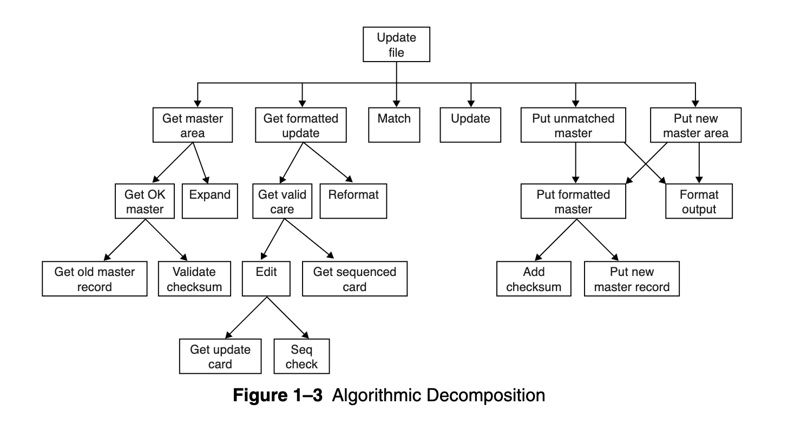
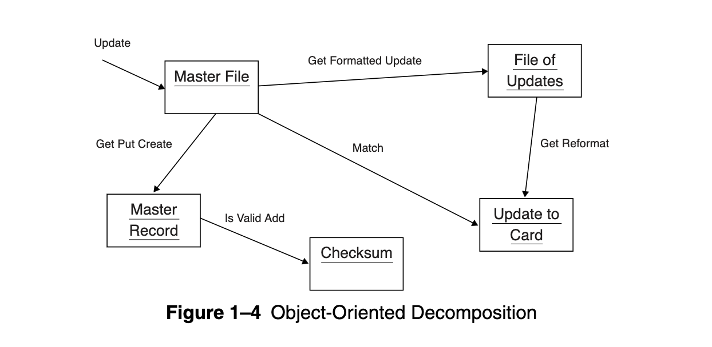
img src: Booch et al., 2007, Object Oriented Analysis & Design.
Benefits of OOP
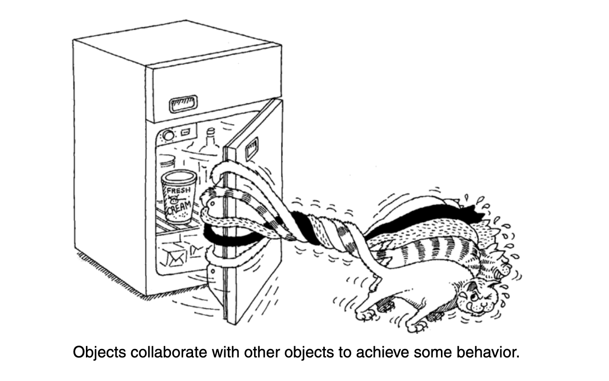
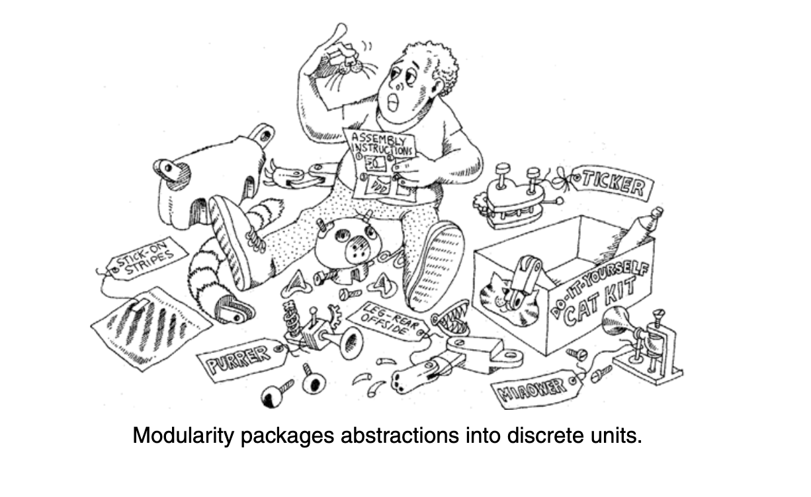
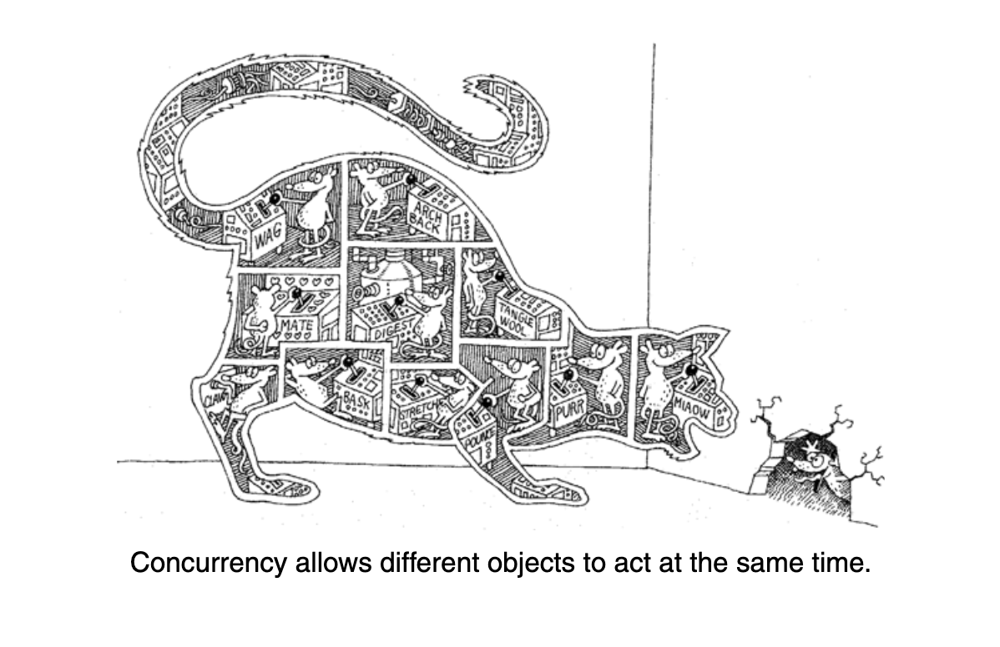
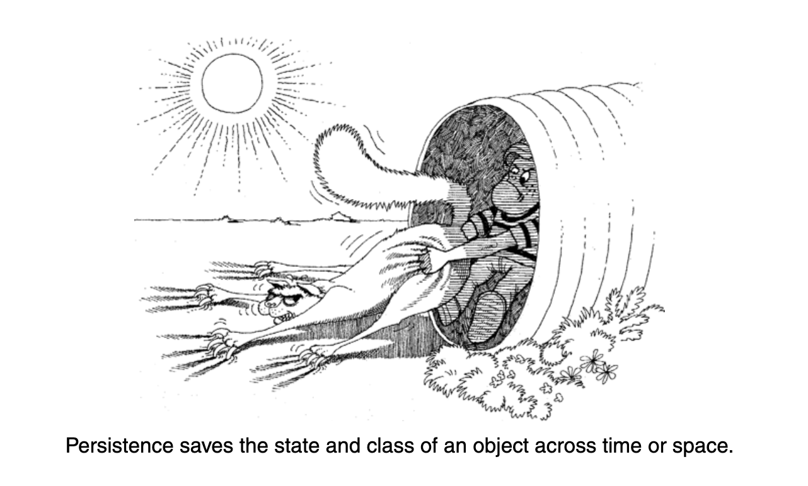
"Modularity is the property of a system that has been decomposed into a set of cohesive and loosely coupled modules."
"Concurrency is the property that distinguishes an active object from one that is not active."
"Persistence is the property of an object through which its existence transcends time and/or space."
img src: Booch et al., 2007, Object Oriented Analysis & Design.
Principles of OOP
- Abstraction
- Inheritance
- Encapsulation
- Polymorphism
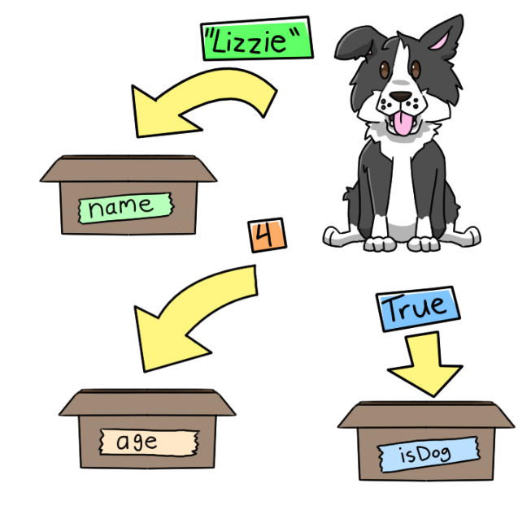
Variables as boxes: Autumn Denny, Ag Informatics Lab, Purdue University, 2025.
Principle #1 of OOP: Abstraction
OOP uses abstractions known as objects.
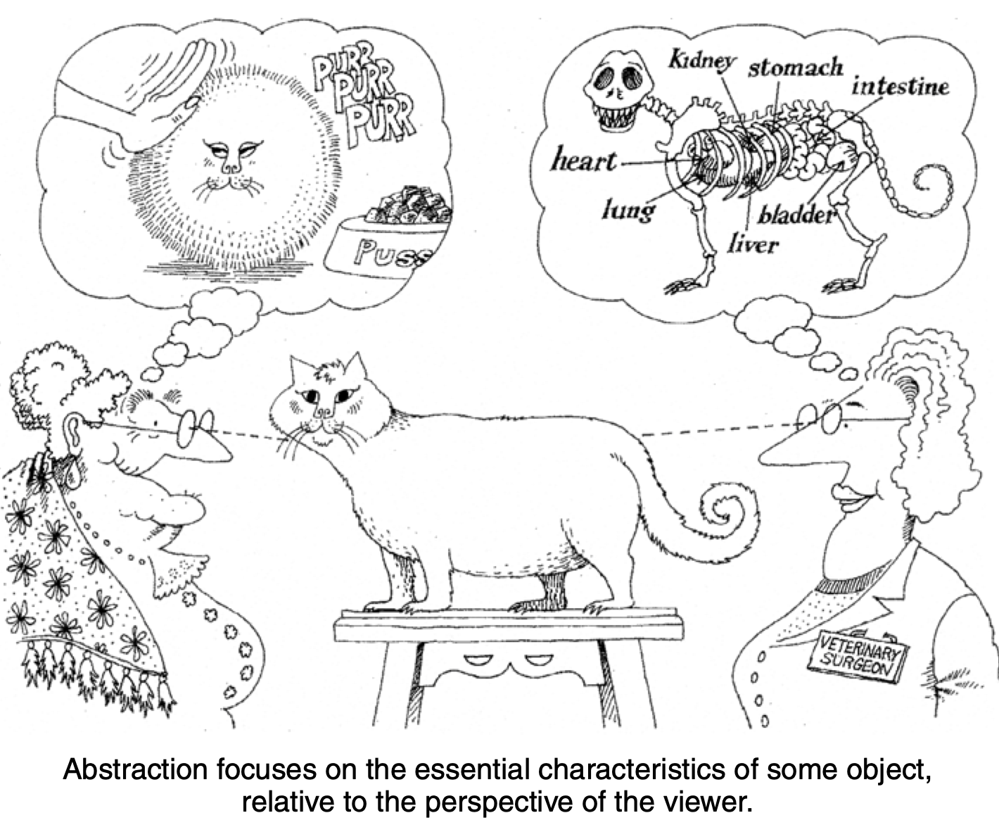
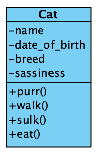
img src: Booch et al., 2007, Object Oriented Analysis & Design.
Objects
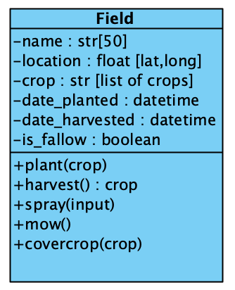
- Attributes (Nouns)
- A variable inside an object
- Attributes have a type
- Accessed:
field.location
- Methods (Verbs)
- A function inside an object
- Optional input/output.
- Run:
field.plant(crop)
Python class
animal_type: Make each kind of animal its own class.name: Pass the name as an argument when object is created.age: Store birthdate, calculate age.breed: Breeds vary by animal.
Indentation matters. Note the use of the colon.
Class = Animal.
Object = this_specific_animal_instance
This is a bad class! Not reusable! All hardcoded!
Let's try to create a more abstract, reusable class.
An abstract, reusable
class Animal
__init__()is a "constructor" method used to create an object.- See function documentation:
help(function_name). selfis self-referential (this object).- Order within the function doesn't matter;
order when passing into the function matters, hence documentation matters.
Instantiate "Bessy"
Animal("Bessy", 2010, 4, 1, 200)calls the class like a function.
The object is constructed using__init__().
Values must be in the same order as its arguments.
This also is why function headers are important - they tell the user what to expect.print(f"hello {bessy.name}"): thefmakes a "formatted string".
Whatever is inside{ }is run, so{bessy.name}=Bessy.
Output printed:hello Bessy
Principle #2 of OOP: Inheritance
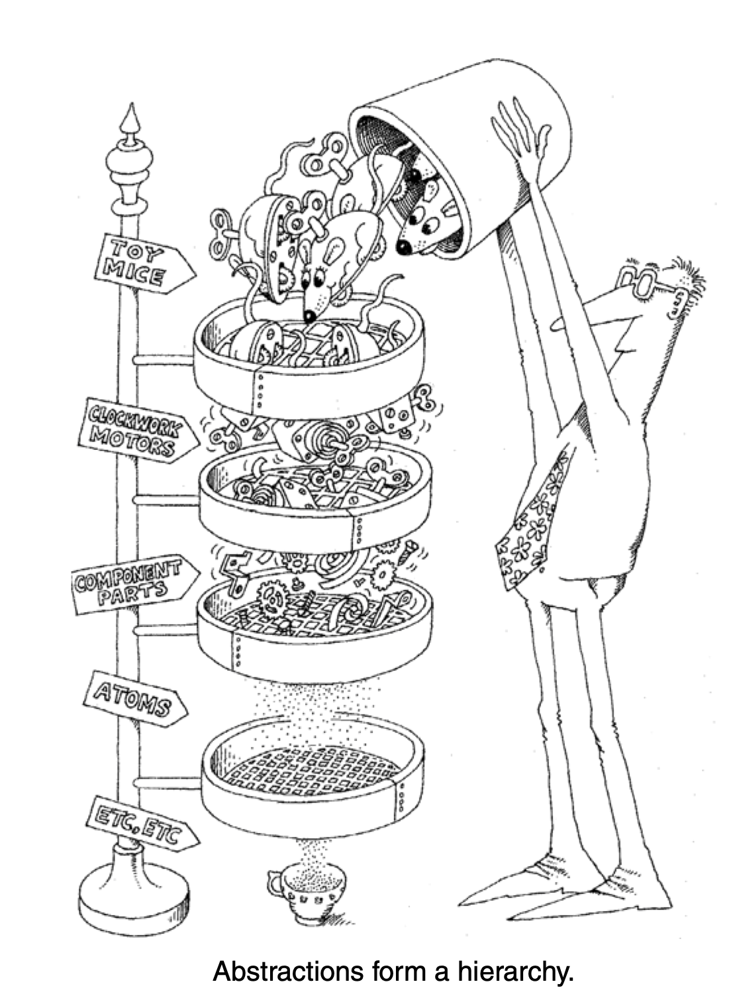
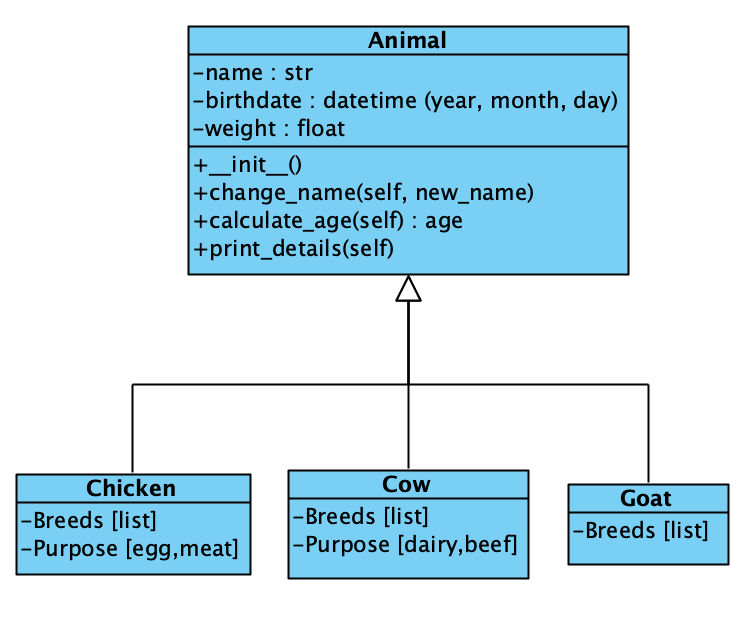
Objects have relationships!
Let's try to create a hierarchy of reusable classes
img src: Booch et al., 2007, Object Oriented Analysis & Design.
Inheritance: Dodo is empty class stub
- The brackets denote the parent being inherited:
class Dodo(Animal) =Dodois a child ofAnimal.Dodoinherits everything anAnimalhas: attributes and methods.passmeans "nothing new to add yet".
Inheritance: Goat is a child class
- Note: in code,
breedarrives through theGoatandCowsubclasses;
in the Farm tracker data model,breedsits on the one Animal table, next to a species column. - Classes tell Python what kind of animal it is - a table has no classes, so it needs a column.
Kleppmann calls this the object-relational mismatch. - In line 8: the lack of
self.means that this is a local variable - not visible outside the__init__constructor method.
Onlyself.goat_secret_nameis kept.
Principle #3 of OOP: Encapsulation
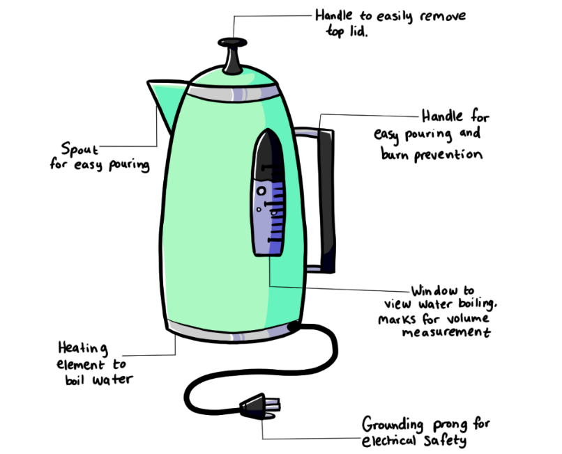
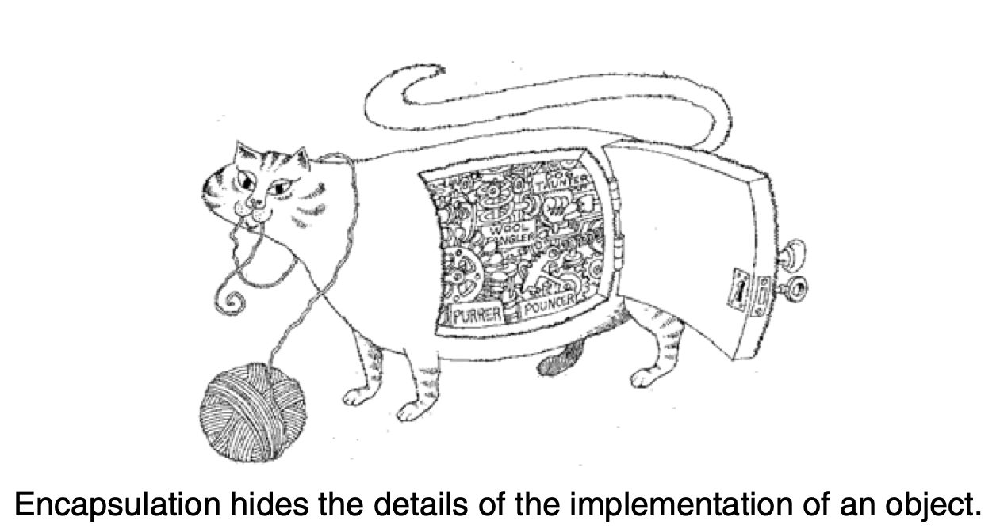
Objects contain data + methods. They have a sense of "self".
Let's write a few methods
img src: Booch et al., 2007, Object Oriented Analysis & Design. Electric kettle: Autumn Denny, Ag Informatics Lab, Purdue University, 2025.
At last, my encapsulated operations!
Hide the birthdate, calculate the age.
(today.month, today.day) < (...)isTrueorFalse
In Python,True= 1: it takes off a year if this year's birthday hasn't happened yet.details()callsself.calculate_age(): a method can use the object's other methods throughself.
Goat tried to keep secrets
- Prints:
Sunny is 17 years old today!andsecret goaty goat - Goat inherited
details()andcalculate_age()from its parent class:Animal - We can access the goat's secret name. Why is that bad? Any code can read/change the goat.
- Python has no truly private
attributes.
The convention is a leading underscore (self._secret_name) and associated method.
Principle #4 of OOP: Polymorphism
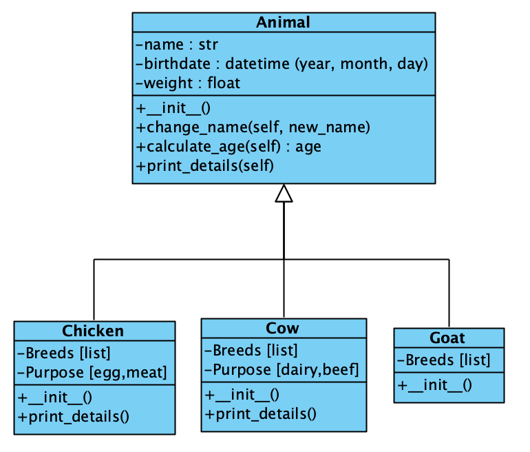
Let's make our classes behave differently depending on what they are
Cow practices polymorphism
- Overriding the previously defined method.
Object-Oriented Programming (OOP)
Model your system as objects
- Identify classes.
- Identify attributes (nouns).
- Outline methods (verbs).
- Create associations & other relationships
Methods as an Object Interface
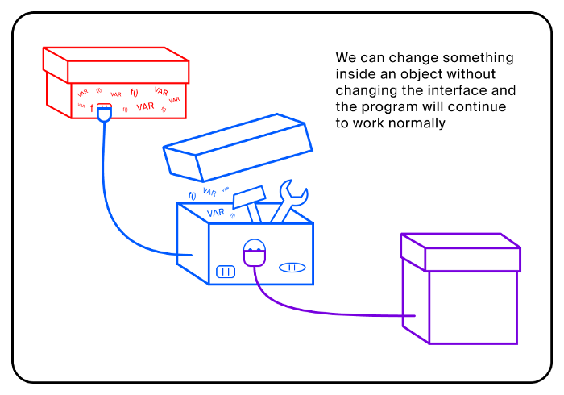
Interface with: a library, a module, a web application.
A collection of
methods are...
an Application
Programming Interface (API!)
Introduction to object-oriented programming, Practicum by Yandex, Medium.
Questions?
License
-

Introduction to Agricultural Informatics Course by Ankita Raturi, Purdue University is licensed under a Creative Commons Attribution-NonCommercial-ShareAlike 4.0 International License.
- You are free to:
- Share — copy and redistribute the material in any medium or format
- Adapt — remix, transform, and build upon the material
- Under the following terms:
- Attribution — You must give appropriate credit, provide a link to the license, and indicate if changes were made. You may do so in any reasonable manner, but not in any way that suggests the licensor endorses you or your use.
- NonCommercial — You may not use the material for commercial purposes.
- ShareAlike — If you remix, transform, or build upon the material, you must distribute your contributions under the same license as the original.
- No additional restrictions — You may not apply legal terms or technological measures that legally restrict others from doing anything the license permits.